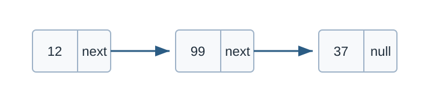

Linked List
คำอธิบาย
linked list เป็นโครงสร้างข้อมูลเชิงเส้น โดยข้อมูลนั้นไม่จำเป็นต้องอาศัยอยู่ในหน่วยความจำที่ตำแหน่งติดกัน
ข้อมูลใน linked list ถูกเชื่อมต่อกันด้วย pointers ดังรูปด้านล่าง

Singly linked list. Original diagram for this guide.
จากรูปจะมีข้อมูลสามชุด ซึ่งเราเรียกว่า node
ใน node แรกจะเก็บเลข 12 และ pointer ที่ชี้ node ถัดไป
node ที่สองเก็บเลข 99 และ pointer ที่ชี้ node ถัดไป
node ที่สามเก็บเลข 37 และ pointer ซึ่งยังไม่ได้ชี้ node อื่น
Singly Linked List
เป็น linked list ประเภทที่ง่ายที่สุด
โดยหนึ่ง node จะเก็บข้อมูล และ pointer เพื่อชี้ตำแหน่งของ node ถัดไป
ตัวอย่างการ implement singly linked list
โดยสร้าง struct Node เพื่อเก็บข้อมูล
// A simple CPP program to introduce
// a linked list
#include <bits/stdc++.h>
using namespace std;
// A linked list node
struct Node {
int data;
struct Node *next;
};
int main() {
// Program to create a simple linked
// list with 3 nodes
Node *head = NULL;
Node *second = NULL;
Node *third = NULL;
// allocate 3 nodes in the heap
head = new Node();
second = new Node();
third = new Node();
/* Three blocks have been allocated dynamically.
We have pointers to these three blocks as head,
second and third
head second third
| | |
| | |
+----+----+ +----+----+ +----+----+
| # | # | | # | # | | # | # |
+----+----+ +----+----+ +----+----+
# represents any random value.
Data is random because we haven’t assigned
anything yet */
head->data = 1; // assign data in first node
head->next = second; // Link first node with
// the second node
/* data has been assigned to the data part of first
block (block pointed by the head). And next
pointer of the first block points to second.
So they both are linked.
head second third
| | |
| | |
+---+---+ +----+----+ +-----+----+
| 1 | o-----> | # | # | | # | # |
+---+---+ +----+----+ +-----+----+
*/
// assign data to second node
second->data = 2;
// Link second node with the third node
second->next = third;
/* data has been assigned to the data part of the second
block (block pointed by second). And next
pointer of the second block points to the third
block. So all three blocks are linked.
head second third
| | |
| | |
+---+---+ +---+---+ +----+----+
| 1 | o-----> | 2 | o-----> | # | # |
+---+---+ +---+---+ +----+----+ */
third->data = 3; // assign data to third node
third->next = NULL;
/* data has been assigned to the data part of the third
block (block pointed by third). And next pointer
of the third block is made NULL to indicate
that the linked list is terminated here.
We have the linked list ready.
head
|
|
+---+---+ +---+---+ +----+------+
| 1 | o-----> | 2 | o-----> | 3 | NULL |
+---+---+ +---+---+ +----+------+
Note that only the head is sufficient to represent
the whole list. We can traverse the complete
list by following the next pointers. */
while (head != NULL) {
printf("%d ", head->data);
head = head->next;
}
// This code is contributed by rathbhupendra
}Operations
insert การเพิ่มข้อมูลใน linked list โดย
สร้าง node ใหม่ชื่อว่า newNode (37)
นำ pointer ของโหนดตำแหน่งก่อนหน้าที่ต้องการจะแทรก (12) ชี้ไปที่ newNode (37)
นำ pointer ของ newNode ไปชี้ที่ pointer ของโหนดตำแหน่งก่อนหน้าเคยชี้ (99)
Visual reference: adding a node in a linked list, Wikimedia Commons 1
delete การลบข้อมูลใน linked list โดย
นำ pointer ของโหนดตำแหน่งก่อนหน้าที่ต้องการจะลบ (12) ชี้ข้ามไปที่ node ในตำแหน่งถัดไป (37)
Visual reference: deleting a node in a linked list, Wikimedia Commons 2
Doubly Linked List
เป็น linked list ที่มีความซับซ้อนเพิ่มขึ้นนิดหนึ่งโดย
node จะเก็บ pointers สองตำแหน่งสำหรับโหนดก่อนหน้า prev และโหนดถัดไป next
Pointer-based linked-list structure. Original diagram for this guide.
// linked.c
#include <bits/stdc++.h>
using namespace std;
// what a node look like internally
struct Node {
int idx;
struct Node *r_next;
struct Node *r_prev;
};
int main() {
// define 3 nodes
struct Node n0, n1, n2;
// initialize the nodes
n0.idx = 0; // the first node has an index of 0
n0.r_next = &n1; // with a reference to the second node
n0.r_prev = NULL; // and a reference to NULL b/c there's no previous node
n1.idx = 1;
n1.r_next = &n2;
n1.r_prev = &n0;
n2.idx = 2;
n2.r_next = NULL;
n2.r_prev = &n1;
// create a new reference to n0 called r_first_element
struct Node *r_first_element = &n0;
printf("The first node lives @ %p\n", r_first_element);
printf("The first node has idx: %d\n", r_first_element->idx);
// print n1 info
printf("The second node lives @ %p\n", r_first_element->r_next);
printf("The second node has idx: %d\n", r_first_element->r_next->idx);
// print n2 info
printf("The third node lives @ %p\n", r_first_element->r_next->r_next);
printf("The third node has idx: %d\n", r_first_element->r_next->r_next->idx);
}{kind=link}
{kind=link}